Chenguang Li 1,2,3 , Yu-Hui Wen 2,3*, Liping Jing 1,2,3
1 State Key Laboratory of Advanced Rail Autonomous Operation, Beijing, China 2 School of Computer Science and Technology, Beijing Jiaotong University, Beijing, China 3 Beijing Key Laboratory of Traffic Data Mining and Embodied Intelligence, Beijing, China {lichenguang, yhwen1, lpjing}@bjtu.edu.cn
Abstract
Realistic choreography demands simultaneous attention to rhythm and motivation. Prevailing automated dance generation methods mainly depend on musical input, overlooking the motivations that drive meaningful dance creation. Inspired by the motivation choreography, we aim to articulate dance motivations through textual guidance. However, the absence of high-quality datasets concurrently containing music, textual descriptions, and motion data presents a challenge in achieving accurate fine-grained textual control. To address this limitation, we present MotivDance, a novel framework integrating fine-grained textual guidance with music to synthesize semantically coherent dance sequences. Our approach first synthesizes text-guided key poses as motivations. We then introduce an Adaptive Keyframe Locator that dynamically positions these motivations within the musical context through beat-aware synchronization and cross-modal latent space alignment. Finally, a Transformer-based U-Net diffusion model performs the motion in-betweening while preserving motivational integrity. Extensive qualitative and quantitative experiments demonstrate that MotivDance effectively integrates music with fine-grained text control to generate high-fidelity dance motions.
1 Introduction
Dance, as a universal form of non-verbal expression, occupies a pivotal position in human culture and social interaction (LaMothe 2019). However, dance choreography is inherently complex and challenging. In traditional film and animation production, these tasks are commonly performed using labor-intensive and costly methods, such as dance notation systems (Davies 2007) or motion capture technologies (Martinez et al. 2017; Mehta et al. 2017; Pavllo et al. 2019). With the advancement of artificial intelligence (AI), the automated dance generation (Li et al. 2023a,b, 2024b) holds significant potential to alleviate the labor-intensive nature of manual choreography, thereby emerging as a crucial and challenging research direction in computer vision and graphics.
Authentic choreography requires a delicate balance between rhythm and motivation; neglecting either can diminish the piece (Humphrey 1959). However, some dance generation models (Li et al. 2021b, 2022; Tseng, Castellon, and Liu 2023) rely mainly on music information, neglecting the underlying motivation that drives the core poses of the choreography-akin to composing lyrics devoid of thematic meaning. While recent attempts (Gong et al. 2023; Liu et al. 2025) incorporate textual guidance to convey choreography intent, the lack of high-quality datasets containing music-motion-text triplets limits the granularity of control, hindering precise control at the body-part level. Drawing upon the motivation choreography (Humphrey 1959) within dance studies, we introduce MotivDance, a body-part aware fine-grained text guided dance motion generation framework.
* Corresponding author Copyright © 2026, Association for the Advancement of Artificial Intelligence (www.aaai.org). All rights reserved.

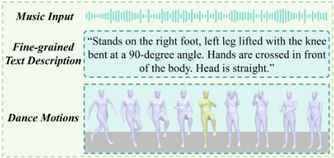
Motivation choreography is a creation methodology that employs core poses motivation as the generative kernel, systematically transforming and developing them to construct unified and thematically rich dance sequence (Humphrey 1959). Following this, our MotivDance treats generated key poses guided by texts as motivations, then applies motion in-betweening as the development.
Specifically, we employ the pre-trained PoseScript model (Delmas et al. 2022) to generate key poses guided by fine-grained textual descriptions, serving as the motivations for choreography. To combine these motivations with the music structure, we propose an Adaptive Keyframe Locator that aligns the CLIP-derived latent spaces of motion and music and subsequently utilizes beat perception and semantic similarity to dynamically determine the optimal positions of key poses within the motion sequence. To expand and diversify the expression of core motivations throughout the dance sequence, we design a motion in-betweening diffusion model inspired by (Karunratanakul et al. 2023), which facilitates the transformation of motivation cues into coherent and dynamic dance sequences. Furthermore, we introduce a spatio-temporal masking mechanism to explicitly enhance the representation of key poses within the noisy motion sequence following (Cohan et al. 2024). During the denoising process, we implement a Transformer-based U-Net decoder that integrates conditional inputs and noise features through cross-attention mechanisms, facilitating high-quality and contextually coherent dance motion generation. In summary, our contributions are as follows:

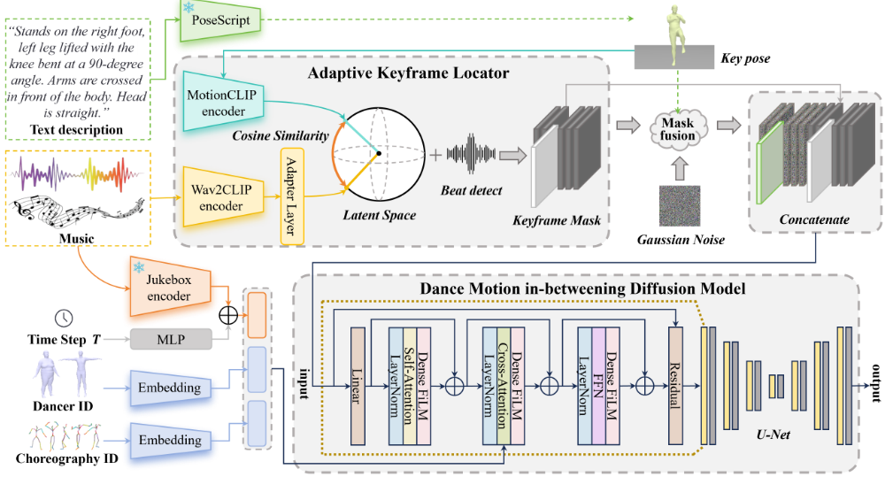
· We introduce the motivation choreography into the AI dance generation, proposing a novel framework that integrates fine-grained, text-guided key poses (i.e., motivations) generation with a motion in-betweening diffusion model to synthesize structurally coherent and semantically meaningful dance sequences.
· We design an Adaptive Keyframe Locator that integrates key poses with music by incorporating an adapter module to align the semantic latent spaces of music and motion. This locator dynamically identifies the optimal key pose positions by computing semantic similarity between motion and music features, along with beat perception.
· We propose a dance motion in-betweening diffusion framework employing a Transformer-based U-Net architecture decoder.
· Extensive qualitative and quantitative experiments validate the effectiveness and superiority of the proposed method in generating high-quality, temporally coherent dance motions.
2 Related Work
Recent years have witnessed notable progress in human motion generation (Tevet et al. 2022b; Chen et al. 2023; Zhang et al. 2024). The following section presents a structured taxonomy of existing methodologies and delineates the core distinctions with our MotivDance.
Text-to-Motion Generation. Notable advancements have recently been achieved in text-to-motion generation research. MDM (Tevet et al. 2022b) pioneers the application of diffusion models (Ho, Jain, and Abbeel 2020) to raw motion sequence modeling. MLD (Chen et al. 2023) proposes a latent diffusion approach, compressing motion data into a low-dimensional latent space prior for efficient synthesis. MotionCLIP (Tevet et al. 2022a) establishes alignment between 3D human motion and the CLIP (Radford et al. 2021) semantic embedding space. MoMask (Guo et al. 2024) employs hierarchical residual quantization and bidirectional transformers for efficient motion generation. HumanTOMATO (Lu et al. 2023) extends this to whole-body motion through separate body and hand codebooks. In contrast to these methodologies, our MotivDance leverages fine-grained textual descriptions to synthesize key poses. These key poses subsequently serve as motivations for motion inbetweening, reconstructing the complete motion sequence.
Music-to-Dance Generation. Recent advancements in music-conditioned dance generation have employed diverse paradigms. Initial approaches, typically relying on motion retrieval and graph-based methods, demonstrate limited flexibility and often failed to generalize across varying musical tempos (Fan, Xu, and Geng 2011; Lee, Lee, and Park 2013; Ofli et al. 2011). Subsequent researches leverage deep learning architectures. FACT (Li et al. 2021b) introduces a cross-modal transformer with full-attention mechanisms to enhance music-motion alignment, and Bailando (Li et al. 2022), which proposes a quantized choreographic memory combined with an actor-critic GPT architecture to address spatial constraints and improve temporal synchronization. More recently, EDGE (Tseng, Castellon, and Liu 2023) facilitates powerful motion editing capabilities such as inbetweening and joint-wise conditioning. A persistent limitation of prevailing methods is their mainly dependence on music input, resulting in constrained controllability over the generated motion. While TM2D (Gong et al. 2023) have incorporated textual prompts for guidance, their capacity for fine-grained, body-part-specific control remains restricted, attributable to the scarcity of high-quality, textually annotated dance datasets. To address these limitations, our proposed model integrates key poses generation with motion in-betweening, circumventing data scarcity challenges and enabling the synthesis of high-quality dance motions with textual controllability.
Motion In-Betweening. Motion in-betweening represents a well-established domain. Subsequent advancements driven by deep learning and generative modeling have yielded methodologies employing VAEs (He et al. 2022; Li et al. 2021a), GANs (Zhou et al. 2020) and Normalizing Flow (Yang et al. 2024). However, these initial generative approaches are typically constrained to interpolation with fixed keyframe patterns. Some progress in this field has been facilitated by the emergence of diffusion models (Ho, Jain, and Abbeel 2020). GMD (Karunratanakul et al. 2023) addresses the challenge of sparse spatial constraints through its Emphasis Projection and Dense Signal Propagation mechanisms. Concurrently, OmniControl (Xie et al. 2023) proposes a unified framework utilizing a hybrid guidance mechanism, integrating spatial guidance for joint positioning with realism guidance to preserve natural motion dynamics. CondMDI (Cohan et al. 2024) introduces a masked conditional diffusion model trained on randomized subsets of keyframes and joints, thereby achieving generalization across diverse sparse keyframe configurations. Building upon these foundational contributions, our MotivDance employs a Transformer based U-net architecture diffusion model for motion in-betweening, integrated with text-guided key poses to enable text-controlled dance motion generation.
3 Preliminaries
Diffusion models (Ho, Jain, and Abbeel 2020) have demonstrated exceptional generative capabilities, exhibiting significant potential for synthesizing high-quality and diverse samples across various domains (Mittal et al. 2021; Ho et al. 2022a,b). These models learn the underlying data distributions through a forward diffusion process followed by a conditional reverse denoising process.
The forward diffusion process incrementally introduces Gaussian noise to the initial data x0 over T discrete timesteps according to a predefined variance schedule βt. Specifically, the transition probability from xt-1 to xt is given by:

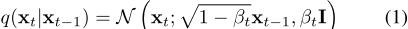
This formulation facilitates the derivation of a closed-form solution for sampling at any given timestep t through the application of reparameterization techniques:

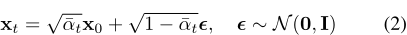
where αt = 1 - βt and ¯αt = ∏ti=1 αi. This reparameterization enables efficient generation of noisy samples at any intermediate stage of the diffusion process.
The conditional reverse process aims to reconstruct the original data from pure noise xT by iteratively removing noise with the guidance of a conditional variable c. The transition probability in this reverse direction is defined as:

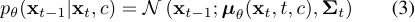
where µθ(xt, t, c) is the estimated mean and Σt represents a time-dependent covariance matrix determined by the noise schedule.
Most motion-oriented diffusion models leverage this framework to generate realistic and temporally coherent motion sequences by conditioning on relevant contextual information such as music or textual descriptions. The training objective is to optimize the diffusion model decoder, denoted by Gθ(xt, t, c), as follows:

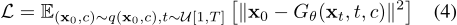
4 Method
The overview of our MotivDance is depicted in Figure 2. We introduce a novel framework designed to effectively capture dance intentions from natural language descriptions. In Section 4.1, we first present the motion representation employed throughout the framework. Subsequently, in Section 4.2, we leverage the PoseScript (Delmas et al. 2022) model to extract semantic features from fine-grained textual inputs and generate corresponding key poses. Furthermore, to achieve semantic-aware and beat-aware keyframe positioning, we introduce an Adaptive Keyframe Locator in Section 4.3. Building upon these generated key poses, we finally employ a Transformer-based motion in-betweening diffusion model as detailed in Section 4.4.
4.1 Motion Representation
We represent human motion using the tensor x ∈ RB×N×D , where B denotes batch size, N indicates the number of frames, and D = 272 specifies the feature dimensionality per frame. We set the number of joints as 22 and decompose motion into local motion and global motion. To enhance keyframe interpretability and facilitate direct guidance, we incorporate absolute root joint positions and rotations. The motion at frame i is formally defined as:

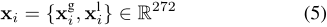
where xgi and xli denote global and local motions at frame i. The global component at time i comprises the relative root rotation θr i and position rr i ∈ R3 (w.r.t. previous frame), the absolute root rotation θa i ∈ R6 , and position ra i ∈ R3 :

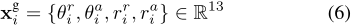
The local component includes root-relative joint positions pi ∈ R21×3 and rotations wi ∈ R21×6 , the global joint velocities vi ∈ R22×3 and foot contact states ci ∈ R4 :

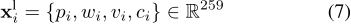
4.2 Text to Dance Pose Generation
Key poses function as structural and expressive anchors within the motivation choreography, defining its core movements, transition elements, and overarching artistic intent (Humphrey 1959). PoseScript (Delmas et al. 2022) demonstrates robust performance in interpreting natural language descriptions of human poses and translating them into corresponding 3D joint parameters. During our practical implementation, users are provided with a set of 12 candidate poses and can interactively select the option that best aligns with their creative objectives or the specific requirements of the choreography.
A discrepancy exists between the output specifications of PoseScript and the motion representation in our system. Specifically, PoseScript generates poses defined by relative joint rotations with respect to the root joint. In contrast, our framework utilizes a comprehensive 272-dimensional motion representation vector. To bridge this gap and integrate PoseScript output into our higher-dimensional representation, we first employ forward kinematics to compute joint positions relative to the root. Subsequently, a masking strategy is applied: the derived key pose parameters are mapped to their corresponding positions within the 272-dimensional vector. The remaining dimensions are masked, designating them for refinement and completion by subsequent modules. This approach effectively integrates key poses into the comprehensive motion representation while reserving masked degrees of freedom for downstream processing.
4.3 Adaptive Keyframe Locator
In motivation choreography, dance exhibits isomorphism with the semantic structure of the music (Humphrey 1959). This relationship necessitates temporal coupling between dance motivations and the musical structure, requiring semantically and beat-aware key pose placement. The proposed module comprises: (1) a Wav2CLIP (Wu et al. 2022) Adapter transforming music features, (2) Semantic Contrastive Alignment bridging the latent spaces of MotionCLIP (Tevet et al. 2022a) and adapted music embeddings, and (3) Semantically Beat-Aware Keyframe Insertion, positioning key poses at the highest semantic-similarity music beat frame.

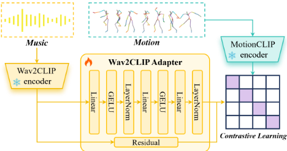
Wav2CLIP Adapter. To achieve semantic-aware key poses positioning, Wav2CLIP (Wu et al. 2022) serves as our foundational music semantic feature extractor. This model facilitates cross-modal alignment by distilling knowledge from the CLIP visual model (Radford et al. 2021), extracting audio features within CLIP's shared embedding space. Consequently, Wav2CLIP maps audio into a multimodal space semantically aligned with visual and textual representations. However, as Wav2CLIP is trained on general video-derived visual scenes, its capacity to capture nuanced musical semantics is inherently constrained. To address this limitation, we introduce an adapter module that refines and enhances the original Wav2CLIP features. The proposed Wav2CLIP adapter, illustrated in Figure 3, employs a residual architecture incorporating a three-layer multilayer perceptron (MLP).
Semantic Contrastive Alignment. To achieve cross-modal alignment between music and dance, we implement the contrastive learning paradigm. As MotionCLIP (Tevet et al. 2022a) model aligns human motion representations with CLIP's rich visual-textual embedding space, we use MotionCLIP encoder to extract semantic features from dance motion.
Following (Qi et al. 2023), we freeze weights in both the MotionCLIP encoder and pre-trained Wav2CLIP encoder during contrastive training. This preserves valuable pretrained knowledge and ensures stable alignment learning, updating only parameters within the Wav2CLIP adapter. Optimization employs the InfoNCE loss (Alayrac et al. 2020), which maximizes similarity between corresponding music embeddings (m) and dance motion embeddings (p) while minimizing similarity for non-corresponding pairs. For a batch of N paired music-motion sequences, the loss for the i-th positive pair (mi, pi) is:

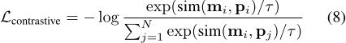
where sim(·, ·) denotes cosine similarity and τ is a temperature parameter scaling the logits.
We utilize heatmaps to visualize the correlation between motion and music before and after alignment, with results shown in Figure 4. After the alignment through contrastive learning, the correlation between motion and music is enhanced, indicating that the features of motion and music become closer in the latent space.
Semantically Beat-Aware Keyframe Insertion. Following the establishment of the joint latent space, we determine optimal temporal positions for key poses using a dual-constrained strategy that balances semantic relevance and rhythmic fidelity. This process comprises two sequential stages:
1. Music Beat Extraction: Perceptually salient rhythmic moments are first identified through beat detection, yielding a sequence of beat onsets B = b1, b2, . . . , bM. This establishes the constrained temporal positions bj where keyframe insertion is permitted, ensuring inherent rhythmic fidelity.
2. Beat-Constrained Semantic Optimization: Candidate key pose k is encoded into the joint latent space via the MotionCLIP encoder, generating pose embedding pk. Frame-level music features {mbj } are extracted at each beat position bj ∈ B using adapted Wav2CLIP model. The semantic relevance between the pose and music context at each beat is quantified through cosine similarity:

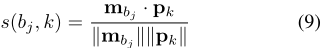
The optimal insertion time ˆ tk is selected as the beat position maximizing semantic correspondence:

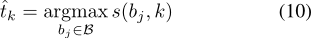
The beat-first constraint ensures robust rhythmic synchronization, while the subsequent semantic optimization selects the most contextually appropriate beat position for each key pose, achieving precise alignment of choreographic motivations with musico-structural events.
4.4 Dance Motion In-Between Diffusion Model
Building upon the key poses, we propose a motion inbetweening diffusion model to interpolate the motion between provided keyframes while adhering to the music. The details are as follows:
Key Pose Fusion Mechanism. To effectively integrate sparse key frames into the diffusion process while ensuring fidelity to these semantic poses, we employ a spatio-temporal masking strategy inspired by (Harvey et al. 2022). This strategy selectively replaces noisy motion samples. During training, we apply a temporal mask that randomly samples a subset of available keyframes for input. This enables flexible conditioning on a variable number of key poses. Furthermore, as discussed in Section 4.2, the key poses generated by PoseScript constitute only a part of our motion representation. Thus, we introduce a spatial mask that randomly samples a subset across the feature dimension. This enhances robustness to spatial variations.

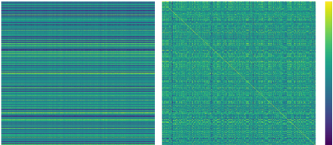
These temporal and spatial masks M are defined as binary-valued tensors, where values are set to 1 at observed keyframe timesteps and joint positions, and 0 elsewhere. The fusion process constructs the conditioned input by combining the noisy motion sample xt with the clean key pose data x0k using the mask via element-wise multiplication (⊙):

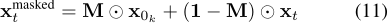
Crucially, following (Cohan et al. 2024), we concatenate the tensor xmasked t with the binary mask M itself along the channel dimension. This concatenated tensor [xmasked t ,M] serves as the primary input to our diffusion model. This explicitly provides the model with the known key poses information and the precise spatio-temporal locations where this conditioning signal is applied.
Transformer Based Conditional Diffusion Model. A conditional diffusion model is employed for motion inbetweening to generate dance sequences. We extract the rich music features by Jukebox (Dhariwal et al. 2020)-a music generation model pre-trained on 1.2 million musical pieces which excels at capturing nuanced rhythmic patterns and dynamic volume variations (Burgoyne, Fujinaga, and Downie 2015; Donahue and Liang 2021). Embeddings representing dancer identity and choreography IDs are simultaneously incorporated. This composite conditioning vector guides the denoising process, facilitating the generation of high-fidelity dance sequences.
The core of the diffusion model is a denoising decoder based on the U-Net architecture, following the design of CondMDI (Cohan et al. 2024). However, the Adaptive Group Normalization (AdaGN) for feature fusion in CondMDI (Cohan et al. 2024) is insufficient for capturing the complex relationship between musical features and dance motions. Consequently, we adopt the transformer-based paradigm, and incorporate residual layers into our U-Net architecture. Furthermore, the model is enhanced with attention mechanisms and dense Feature-wise Linear Modulation (FiLM) layers to enable context-aware conditioning. In this refined architecture, each FiLM layer processes both the output from the preceding layers Y and the timestep embedding et:

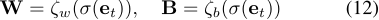

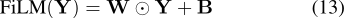
where σ, ζw and ζb represent linear layers, and ⊙ denotes element-wise multiplication.
Through the hierarchical integration of these design elements, the framework achieves superior adaptation to input motion feature distributions and contextual nuances.
5 Experiments
In this section, we introduce the datasets and evaluation metrics used in the experiments, and present both qualitative and quantitative results. These demonstrate that our MotivDance achieves high-quality dance motion generation.
5.1 Dataset
In our experiments, we evaluate the proposed method on two datasets: AIST++ (Li et al. 2021b) and FineDance (Li et al. 2023a).
AIST++. AIST++ contains approximately 5.2 hours of 3D motion data, consisting of 1408 sequences performed by 30 dancers across 10 different dance genres. The 3D motions are reconstructed from synchronized multi-view videos (9 views) with 60-FPS and represented using the SMPL (Loper et al. 2023) model with 24 body joints.
FineDance. The FineDance dataset is a 3D optical motion capture dataset comprising 14.6 hours dance motion data. It is represented by a 52-joint skeleton model with 30-FPS, and comprehensive coverage of 22 professional dance genres.
5.2 Evaluation Metrics
To assess the quality of synthesized dance sequences, we compute both kinetic (Onuma, Faloutsos, and Hodgins 2008) and geometric (Müller, Röder, and Clausen 2005) motion features. We subsequently calculate the Fréchet Inception Distance (FID) (Heusel et al. 2017) between the generated sequences and the entire dataset (encompassing both training and test partitions) using these feature representations. Additionally, we quantify motion diversity by computing the average pairwise Euclidean distance. To evaluate rhythmic coherence with the input music, we employ the Beat Alignment Score (BAS). Furthermore, we adopt the Keyframe Error (KE) metric (Karunratanakul et al. 2023), which computes the mean Euclidean distance between root joint positions in the generated motion and corresponding ground-truth keyframes at specified keyframe timesteps.
5.3 Qualitative experiments
To demonstrate the generation capabilities of MotivDance, we employ fine-grained text-guided key poses generation and integrate them into the dance motion sequence. Notably, the fine-grained text in our MotivDance is designed to operate at the body-part level of granularity. As shown in Figure 5, the results indicate that MotivDance is capable of generating dance motions that follow the specified fine-grained textual descriptions.

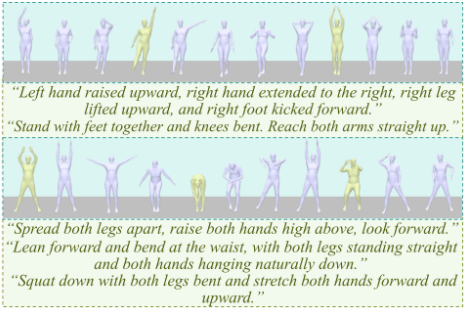

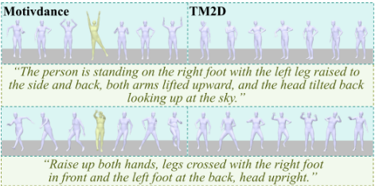
Furthermore, we compare to TM2D (Gong et al. 2023), with results presented in Figure 6. Our approach demonstrates the ability to generate motions aligned with body-part aware, fine-grained textual guidance, whereas TM2D shows limited adherence to such detailed specifications.
5.4 Quantitative experiments
In this section, we evaluate MotivDance's performance for both keyframe-based and keyframe-free methods, incorporating an ablation study and a user study (in appendix).
Sparse Keyframe-based Generation. To evaluate the motion in-betweening of MotivDance under sparse keyframe guidance, we conduct comprehensive comparisons with state-of-the-art motion diffusion models, including Omnicontrol (Xie et al. 2023), GMD (Karunratanakul et al. 2023), and CondMDI (Cohan et al. 2024). Several existing baseline methods (Karunratanakul et al. 2023; Xie et al. 2023) do not natively support conditioning on arbitrary, full-body joints. To facilitate a more meaningful and comprehensive comparison, we follow CondMDI (Cohan et al. 2024) and focus on the root joint trajectory. For a fair comparison, the motion generation is conditioned by setting 5 keyframes at uniformly distributed positions along the motion sequence. We slice the test sequence of AIST++ (Li et al. 2021b) following EDGE (Tseng, Castellon, and Liu 2023) and evaluate the performance on these slices. The quantitative results are summarized in Table 1. The experimental results demonstrate that MotivDance achieves superior motion generation quality, while maximally preserving keyframe consistency and yielding the lowest keyframe error.

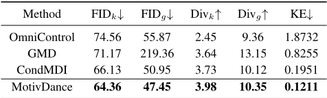
Recognized table text (check against the image)
| Method | FIDk↓ | FIDg↓ | Divk↑ | Divg↑ | KE↓ |
|---|---|---|---|---|---|
| OmniControl | 74.56 | 55.87 | 2.45 | 9.36 | 1.8732 |
| GMD | 71.17 | 219.36 | 3.64 | 13.15 | 0.8255 |
| CondMDI | 66.13 | 50.95 | 3.73 | 10.12 | 0.1951 |
| MotivDance | 64.36 | 47.45 | 3.98 | 10.35 | 0.1211 |

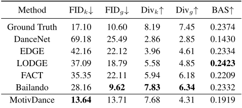
Recognized table text (check against the image)
| Method | FIDk↓ | FIDg↓ | Divk↑ | Divg↑ | BAS↑ |
|---|---|---|---|---|---|
| Ground Truth | 17.10 | 10.60 | 8.19 | 7.45 | 0.2374 |
| DanceNet | 69.18 | 25.49 | 2.86 | 2.85 | 0.1430 |
| EDGE | 42.16 | 22.12 | 3.96 | 4.61 | 0.2334 |
| LODGE | 37.09 | 18.79 | 5.58 | 4.85 | 0.2423 |
| FACT | 35.35 | 22.11 | 5.94 | 6.18 | 0.2209 |
| Bailando | 28.16 | 9.62 | 7.83 | 6.34 | 0.2332 |
| MotivDance | 13.64 | 13.71 | 7.68 | 4.31 | 0.1919 |
Keyframe-free Generation. To evaluate the model's capability in generating dance motion solely driven by music, we conduct experiments under keyframe-free conditions. During the inference phase, all input masks are set to zero, and the generation process is initialized purely from noise.
We compare MotivDance with a series of existing methods, including DanceNet (Zhuang et al. 2022), EDGE (Tseng, Castellon, and Liu 2023), LODGE (Li et al. 2024a), FACT (Li et al. 2021b), Bailando (Li et al. 2022). The results, summarized in Table 2, indicate that our method achieves superior performance in terms of generation quality, as measured by the FID. Additionally, it maintains competitive performance in other evaluation metrics, demonstrating its effectiveness in preserving high fidelity to the music-conditioned generation task.
Furthermore, due to the rich diversity of dance motions in the FineDance dataset, we conduct an evaluation of the diversity and beat alignment score on the FineDance dataset. As shown in Table 3, MotivDance achieves higher motion diversity and better beat alignment.

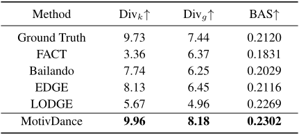
Recognized table text (check against the image)
| Method | Divk↑ | Divg↑ | BAS↑ |
|---|---|---|---|
| Ground Truth | 9.73 | 7.44 | 0.2120 |
| FACT | 3.36 | 6.37 | 0.1831 |
| Bailando | 7.74 | 6.25 | 0.2029 |
| EDGE | 8.13 | 6.45 | 0.2116 |
| LODGE | 5.67 | 4.96 | 0.2269 |
| MotivDance | 9.96 | 8.18 | 0.2302 |

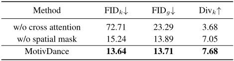
Recognized table text (check against the image)
| Method | FIDk↓ | FIDg↓ | Divk↑ |
|---|---|---|---|
| w/o cross attention | 72.71 | 23.29 | 3.68 |
| w/o spatial mask | 15.24 | 13.89 | 7.05 |
| MotivDance | 13.64 | 13.71 | 7.68 |
Based on the analysis of Table 2 and 3, the AIST++ dataset primarily comprises electronic dance genres (e.g., Hip-hop, Breaking) characterized by intense and regular rhythmic patterns. Consequently, the generated motions tend to exhibit periodic patterns and repetitive motions, constraining motion diversity. In contrast, the FineDance dataset encompasses a richer variety of dance genres, thereby providing the model with an expanded generative space that more readily facilitates diversified motion generation.
Ablation Study. We conduct an ablation study on the keyframe-free generation task on AIST++ test set, focusing on the roles of cross-attention and spatial masking. In the absence of cross-attention, we replace it with Adaptive Group Normalization (AdaGN). When spatial masking is removed, only temporal masking is applied during the generation process. Model performance is evaluated using the FID and Div metrics. The results (shown in Table 4) suggest that both components contribute to overall performance, as removing either component generally leads to lower performance in terms of FID and Div scores compared to the full model.
6 Conclusion
Overall, MotivDance integrates motivation choreography with artificial intelligence, leveraging key poses generation combined with motion in-betweening to achieve fine-grained text guided dance generation while adhering to music. It circumvents the scarcity bottleneck of high-quality, text-described dance datasets and achieves adaptive keyframe localization. Evaluations demonstrate that MotivDance delivers a more precise and effective solution for text-driven dance motion generation.
Acknowledgments
This work is supported by the National Key Research and Development Program of China(2024YFE0202900), the National Natural Science Foundation of China under Grant (62536001, 62436001, 62176020, 62202257), the Joint Foundation of the Ministry of Education for Innovation team (8091B042235), the State Key Laboratory of Rail Traffic Control and Safety (RCS2023K006), and Beijing Science and Technology plan project (Z231100005923029)
References
Alayrac, J.-B.; Recasens, A.; Schneider, R.; Arandjelovi´c, R.; Ramapuram, J.; De Fauw, J.; Smaira, L.; Dieleman, S.; and Zisserman, A. 2020. Self-supervised multimodal versatile networks. Advances in neural information processing systems, 33: 25-37.
Burgoyne, J. A.; Fujinaga, I.; and Downie, J. S. 2015. Music information retrieval.
Chen, X.; Jiang, B.; Liu, W.; Huang, Z.; Fu, B.; Chen, T.; and Yu, G. 2023. Executing your commands via motion diffusion in latent space. In Proceedings of the IEEE/CVF conference on computer vision and pattern recognition, 18000–18010.
Cohan, S.; Tevet, G.; Reda, D.; Peng, X. B.; and van de Panne, M. 2024. Flexible motion in-betweening with diffusion models. In ACM SIGGRAPH 2024 Conference Papers, 1-9.
Davies, E. 2007. Beyond dance: Laban's legacy of movement analysis. Routledge.
Delmas, G.; Weinzaepfel, P.; Lucas, T.; Moreno-Noguer, F.; and Rogez, G. 2022. Posescript: 3d human poses from natural language. In European Conference on Computer Vision, 346-362. Springer.
Dhariwal, P.; Jun, H.; Payne, C.; Kim, J. W.; Radford, A.; and Sutskever, I. 2020. Jukebox: A generative model for music. arXiv preprint arXiv:2005.00341.
Donahue, C.; and Liang, P. 2021. Sheet sage: Lead sheets from music audio. Proc. ISMIR Late-Breaking and Demo.
Fan, R.; Xu, S.; and Geng, W. 2011. Example-based automatic music-driven conventional dance motion synthesis. IEEE transactions on visualization and computer graphics, 18(3): 501-515.
Gong, K.; Lian, D.; Chang, H.; Guo, C.; Jiang, Z.; Zuo, X.; Mi, M. B.; and Wang, X. 2023. Tm2d: Bimodality driven 3d dance generation via music-text integration. In Proceedings of the IEEE/CVF International Conference on Computer Vision, 9942-9952.
Guo, C.; Mu, Y.; Javed, M. G.; Wang, S.; and Cheng, L. 2024. Momask: Generative masked modeling of 3d human motions. In Proceedings of the IEEE/CVF Conference on Computer Vision and Pattern Recognition, 1900-1910.
Harvey, W.; Naderiparizi, S.; Masrani, V.; Weilbach, C.; and Wood, F. 2022. Flexible diffusion modeling of long videos. Advances in neural information processing systems, 35: 27953-27965.
He, C.; Saito, J.; Zachary, J.; Rushmeier, H.; and Zhou, Y. 2022. Nemf: Neural motion fields for kinematic animation. Advances in Neural Information Processing Systems, 35: 4244-4256.
Heusel, M.; Ramsauer, H.; Unterthiner, T.; Nessler, B.; and Hochreiter, S. 2017. Gans trained by a two time-scale update rule converge to a local nash equilibrium. Advances in neural information processing systems, 30.
Ho, J.; Chan, W.; Saharia, C.; Whang, J.; Gao, R.; Gritsenko, A.; Kingma, D. P.; Poole, B.; Norouzi, M.; Fleet, D. J.; et al. 2022a. Imagen video: High definition video generation with diffusion models. arXiv preprint arXiv:2210.02303.
Ho, J.; Jain, A.; and Abbeel, P. 2020. Denoising diffusion probabilistic models. Advances in neural information processing systems, 33: 6840-6851.
Ho, J.; Saharia, C.; Chan, W.; Fleet, D. J.; Norouzi, M.; and Salimans, T. 2022b. Cascaded diffusion models for high fidelity image generation. Journal of Machine Learning Research, 23(47): 1-33.
Humphrey, D. 1959. The art of making dances.
Karunratanakul, K.; Preechakul, K.; Suwajanakorn, S.; and Tang, S. 2023. Guided motion diffusion for controllable human motion synthesis. In Proceedings of the IEEE/CVF International Conference on Computer Vision, 2151-2162.
LaMothe, K. 2019. The dancing species: how moving together in time helps make us human. Aeon, June, 1(1): 1-2. Lee, M.; Lee, K.; and Park, J. 2013. Music similarity-based approach to generating dance motion sequence. Multimedia tools and applications, 62: 895-912.
Li, J.; Villegas, R.; Ceylan, D.; Yang, J.; Kuang, Z.; Li, H.; and Zhao, Y. 2021a. Task-generic hierarchical human motion prior using vaes. In 2021 International Conference on 3D Vision (3DV), 771-781. IEEE.
Li, R.; Yang, S.; Ross, D. A.; and Kanazawa, A. 2021b. Ai choreographer: Music conditioned 3d dance generation with aist++. In Proceedings of the IEEE/CVF international conference on computer vision, 13401-13412.
Li, R.; Zhang, Y.; Zhang, Y.; Zhang, H.; Guo, J.; Zhang, Y.; Liu, Y.; and Li, X. 2024a. Lodge: A coarse to fine diffusion network for long dance generation guided by the characteristic dance primitives. In Proceedings of the IEEE/CVF Conference on Computer Vision and Pattern Recognition, 1524-1534.
Li, R.; Zhao, J.; Zhang, Y.; Su, M.; Ren, Z.; Zhang, H.; Tang, Y.; and Li, X. 2023a. FineDance: A fine-grained choreography dataset for 3d full body dance generation. In Proceedings of the IEEE/CVF International Conference on Computer Vision, 10234-10243.
Li, S.; Tianpei, G.; Yang, Z.; Lin, Z.; Liu, Z.; Ding, H.; Yang, L.; and Chen, C. L. 2024b. Duolando: Follower GPT with Off-Policy Reinforcement Learning for Dance Accompaniment. In ICLR.
Li, S.; Yu, W.; Gu, T.; Lin, C.; Wang, Q.; Qian, C.; Loy, C. C.; and Liu, Z. 2022. Bailando: 3d dance generation by actor-critic gpt with choreographic memory. In Proceedings of the IEEE/CVF Conference on Computer Vision and Pattern Recognition, 11050-11059.
Li, S.; Yu, W.; Gu, T.; Lin, C.; Wang, Q.; Qian, C.; Loy, C. C.; and Liu, Z. 2023b. Bailando++: 3D Dance GPT With Choreographic Memory. IEEE Trans. Pattern Anal. Mach. Intell.
Liu, X.; Feng, Z.; Kanojia, D.; and Wang, W. 2025. Dgfm: Full body dance generation driven by music foundation models. arXiv preprint arXiv:2502.20176.
Loper, M.; Mahmood, N.; Romero, J.; Pons-Moll, G.; and Black, M. J. 2023. SMPL: A skinned multi-person linear model. In Seminal Graphics Papers: Pushing the Boundaries, Volume 2, 851-866.
Lu, S.; Chen, L.-H.; Zeng, A.; Lin, J.; Zhang, R.; Zhang, L.; and Shum, H.-Y. 2023. Humantomato: Text-aligned whole-body motion generation. arXiv preprint arXiv:2310.12978.
Martinez, J.; Hossain, R.; Romero, J.; and Little, J. J. 2017. A simple yet effective baseline for 3d human pose estimation. In Proceedings of the IEEE international conference on computer vision, 2640-2649.
Mehta, D.; Sridhar, S.; Sotnychenko, O.; Rhodin, H.; Shafiei, M.; Seidel, H.-P.; Xu, W.; Casas, D.; and Theobalt, C. 2017. Vnect: Real-time 3d human pose estimation with a single rgb camera. Acm transactions on graphics (tog), 36(4): 1-14.
Mittal, G.; Engel, J.; Hawthorne, C.; and Simon, I. 2021. Symbolic music generation with diffusion models. arXiv preprint arXiv:2103.16091.
Müller, M.; Röder, T.; and Clausen, M. 2005. Efficient content-based retrieval of motion capture data. In ACM SIGGRAPH 2005 Papers, 677-685.
Ofli, F.; Erzin, E.; Yemez, Y.; and Tekalp, A. M. 2011. Learn2dance: Learning statistical music-to-dance mappings for choreography synthesis. IEEE Transactions on Multimedia, 14(3): 747-759.
Onuma, K.; Faloutsos, C.; and Hodgins, J. K. 2008. FMDistance: A Fast and Effective Distance Function for Motion Capture Data. Eurographics (Short Papers), 7(10).
Pavllo, D.; Feichtenhofer, C.; Grangier, D.; and Auli, M. 2019. 3d human pose estimation in video with temporal convolutions and semi-supervised training. In Proceedings of the IEEE/CVF conference on computer vision and pattern recognition, 7753-7762.
Qi, Q.; Zhuo, L.; Zhang, A.; Liao, Y.; Fang, F.; Liu, S.; and Yan, S. 2023. Diffdance: Cascaded human motion diffusion model for dance generation. In Proceedings of the 31st ACM International Conference on Multimedia, 1374-1382.
Radford, A.; Kim, J. W.; Hallacy, C.; Ramesh, A.; Goh, G.; Agarwal, S.; Sastry, G.; Askell, A.; Mishkin, P.; Clark, J.; et al. 2021. Learning transferable visual models from natural language supervision. In International conference on machine learning, 8748-8763. PmLR.
Tevet, G.; Gordon, B.; Hertz, A.; Bermano, A. H.; and Cohen-Or, D. 2022a. Motionclip: Exposing human motion generation to clip space. In European Conference on Computer Vision, 358-374. Springer.
Tevet, G.; Raab, S.; Gordon, B.; Shafir, Y.; Cohen-Or, D.; and Bermano, A. H. 2022b. Human motion diffusion model. arXiv preprint arXiv:2209.14916.
Tseng, J.; Castellon, R.; and Liu, K. 2023. Edge: Editable dance generation from music. In Proceedings of the IEEE/CVF conference on computer vision and pattern recognition, 448-458.
Wu, H.-H.; Seetharaman, P.; Kumar, K.; and Bello, J. P. 2022. Wav2clip: Learning robust audio representations from clip. In ICASSP 2022-2022 IEEE International Conference on Acoustics, Speech and Signal Processing (ICASSP), 4563-4567. IEEE.
Xie, Y.; Jampani, V.; Zhong, L.; Sun, D.; and Jiang, H. 2023. Omnicontrol: Control any joint at any time for human motion generation. arXiv preprint arXiv:2310.08580.
Yang, Z.; Wen, Y.-H.; Chen, S.-Y.; Liu, X.; Gao, Y.; Liu, Y.- J.; Gao, L.; and Fu, H. 2024. Keyframe Control of Music-Driven 3D Dance Generation. IEEE Transactions on Visualization and Computer Graphics, 30(7): 3474-3486.
Zhang, M.; Cai, Z.; Pan, L.; Hong, F.; Guo, X.; Yang, L.; and Liu, Z. 2024. Motiondiffuse: Text-driven human motion generation with diffusion model. IEEE transactions on pattern analysis and machine intelligence, 46(6): 4115-4128.
Zhou, Y.; Lu, J.; Barnes, C.; Yang, J.; Xiang, S.; et al. 2020. Generative tweening: Long-term inbetweening of 3d human motions. arXiv preprint arXiv:2005.08891.
Zhuang, W.; Wang, C.; Chai, J.; Wang, Y.; Shao, M.; and Xia, S. 2022. Music2dance: Dancenet for music-driven dance generation. ACM Transactions on Multimedia Computing, Communications, and Applications (TOMM), 18(2): 1-21.